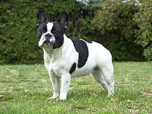

Franska bulldoggs är en hundras som, trots namnet tros härstämmas från England och den engelska bulldogen. En fransk bulldogg är lätt att känna igen på dess stora fladdermusöron. Den lilla hunden har ett platt ansikte och en kort, glansig päls som är tigrerad, skäck eller sandfärgad. En fullvuxen fralla är 27–34,5 cm i mankhöjd och väger 11–12,5 kg.
Franska bulldoggs är trevliga, humoristiska, aktiva och utvecklar ofta stora personligheter. I en undersökning i 2012/2013 utnämndes franska bulldoggs som en av världens tjugo populäraste hundraser. Inom Sverige har franska bulldoggs smeknamnet "fralla" och inom engelsktalande länder "frenchie".